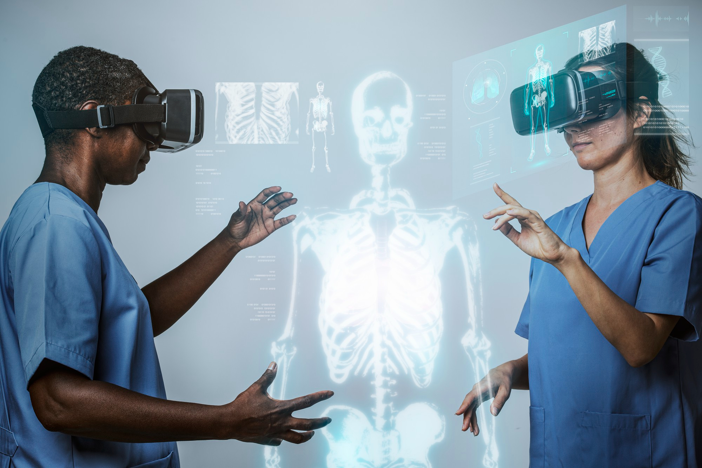

Inteligência Artificial na saúde: até onde avançar sem perder a qualidade do cuidado?
Além do impacto direto no tratamento, os limites da inteligência artificial também levantam questões éticas e regulatórias
A Inteligência Artificial (IA) já é parte do cotidiano da medicina, auxiliando diagnósticos, monitorando pacientes a distância e apoiando decisões clínicas. No entanto, especialistas alertam: apesar do potencial de agilizar tratamentos, prever riscos e aumentar a precisão, a tecnologia não substitui a presença humana no atendimento. Esse foi o tom central dos debates da Expo-Hospital Brasil 2025, realizada entre 23 e 25 de setembro, no Expominas, em Belo Horizonte.
Segundo a ConextaExp, plataforma dedicada a conteúdos e eventos na área da saúde, pesquisas apontam que a combinação de IA e habilidades humanas resulta em um cuidado mais completo e respeitoso. “A humanização é essencial para que a inovação seja aplicada de forma ética e centrada no paciente, sem que a busca por eficiência prejudique o vínculo e a confiança na relação médico-paciente”, destacou a instituição.
O evento trouxe à tona questões fundamentais: até onde a tecnologia pode ir no atendimento clínico? Quais funções devem permanecer exclusivamente nas mãos dos profissionais de saúde? E como equilibrar a precisão das máquinas com a atenção humanizada sem comprometer a qualidade? Além disso, surgiram reflexões sobre os limites éticos e legais, como a segurança de dados sensíveis e a responsabilidade diante de decisões automatizadas.
Para Fernando Kutova, organizador da Expo-Hospital Brasil, a IA deve ser encarada como parceira, não como substituta do trabalho médico. “Assim como tivemos avanços na cirurgia minimamente invasiva e na robótica, agora vemos a inteligência artificial melhorar laudos à distância e apoiar procedimentos cirúrgicos. Ela também tem aplicações no acompanhamento nutricional dos pacientes. Há estudos que mostram que uma boa nutrição pode reduzir em até dois dias a permanência em UTIs, diminuindo riscos e liberando leitos”, explicou.
De acordo com ele, esses impactos beneficiam tanto os pacientes, que recebem cuidados mais eficazes, quanto os hospitais, que conseguem reduzir custos e aumentar a eficiência. Ainda assim, Kutova reforça que nada substitui o acolhimento humano. “A inteligência artificial não vem para roubar empregos, mas para ampliar a performance, reduzir gastos e facilitar o acesso. O papel do profissional de saúde no contato direto com o paciente é insubstituível. Por isso, precisamos investir constantemente na capacitação das pessoas”, concluiu.